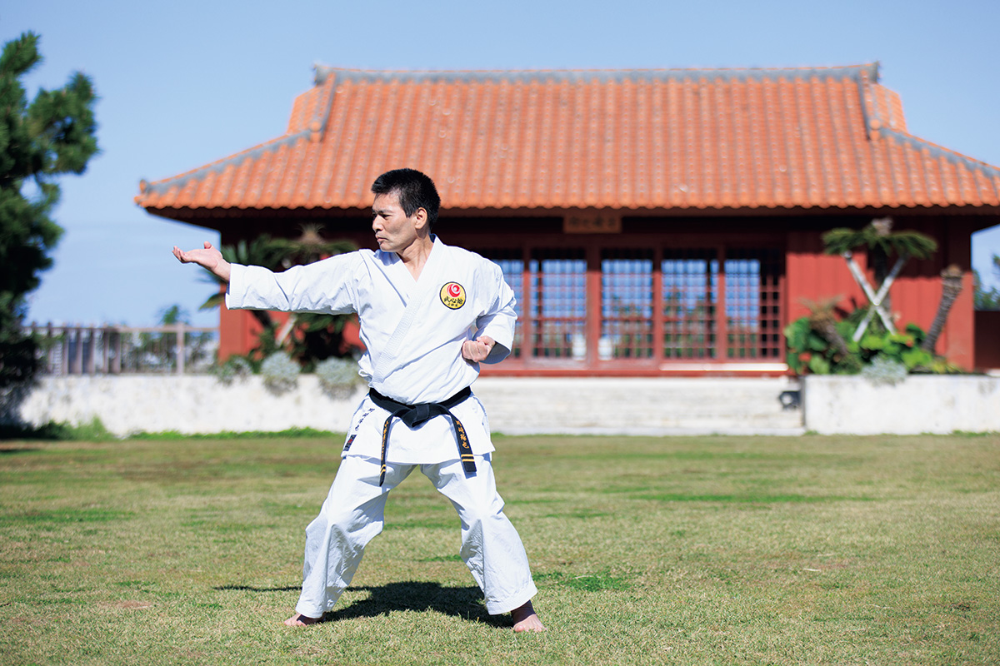
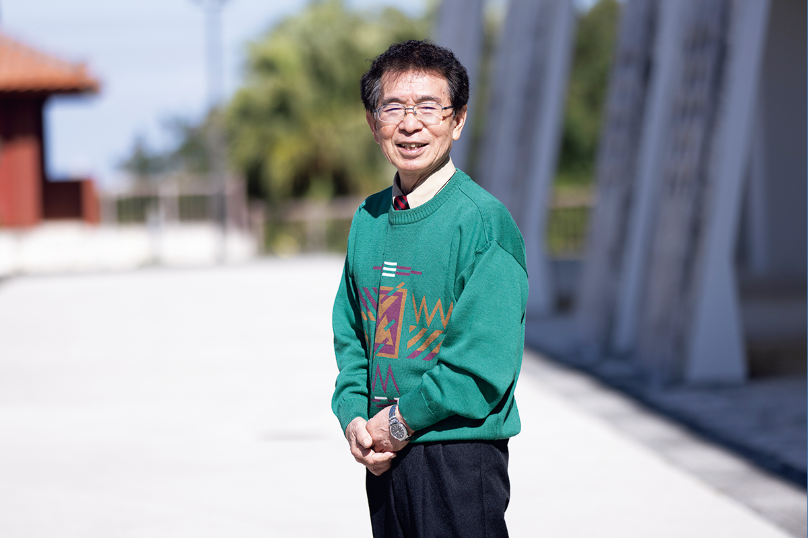
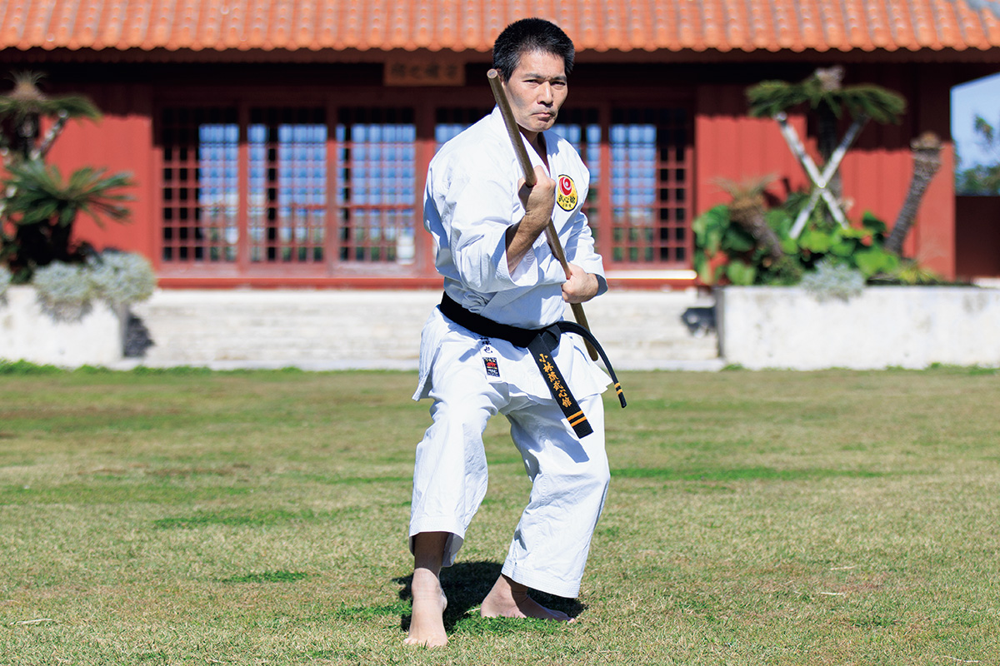

Префектура Окинава · остров Окинава · традиции
Окинавское карате: боевое искусство, которое начинается и заканчивается ката

Королевство Рюкю с центром в замке Сюри просуществовало около 450 лет, а потом Окинава успела побывать под властью Японии, Америки и снова Японии. Карате пережило все эти перемены и из местного искусства самозащиты стало одним из самых известных боевых искусств мира.
Истоки
Остров, где родилось карате
Карате занимаются в 193 странах, и любителей, по разным оценкам, около 130 миллионов. В основе этого искусства лежит старое правило: «в карате нет первого удара». Оно означает, что владение карате не даёт права нападать первым и задирать других. Карате служит не для того, чтобы показывать силу, а для того, чтобы держать себя в руках. Поэтому его и называют боевым искусством мира.

Родина карате это Окинава. Главный принцип традиционного окинавского карате звучит так: «всё начинается с ката и заканчивается ката». Ката это заученная последовательность движений, которую повторяют годами. Победы и зрелищность здесь ценят меньше, чем ежедневную тренировку и терпеливую работу над собой. Этим окинавская школа и отличается от современного карате, которое давно превратилось в спорт с турнирами и очками: на Окинаве карате остаётся временем наедине с собой.
Наш собеседник учился в США, а вернувшись на Окинаву, работал на американской военной базе и одновременно вёл собственный додзё. Когда в 2017 году открылся Okinawa Karate Kaikan, он возглавил расположенный там информационный центр. Он свободно говорит на японском, английском и учинагути, окинавском языке, и соединяет Окинаву с остальным миром.
Истоки традиционного окинавского карате обычно ищут в «ти», искусстве самозащиты, которым владели самураи королевства Рюкю. Но специалист допускает, что первые ростки появились и на «мо-асиби». Так называли деревенские вечеринки, где молодёжь под открытым небом пела и танцевала, наперебой показывая, кто что умеет.
В 1922 году мастер Гитин Фунакоси привёз карате на основные острова Японии, и дальше оно развивалось прежде всего в университетских клубах. Потом карате разошлось по миру: его увозили с собой окинавские переселенцы и американские солдаты, которые познакомились с ним, пока служили на острове.
Сегодня префектура Окинава и Общество развития традиционного окинавского карате направляют инструкторов в детские сады и школы по всей префектуре.
«Если дети знакомятся с карате с самого раннего возраста, оно остаётся живой частью нашей культуры, и мы можем передать его дальше»
генеральный секретарь Общества развития традиционного окинавского карате
Okinawa Karate Kaikan
- Адрес
- префектура Окинава, Томигусуку, Томигусуку, 854-1
- Сайт
- karatekaikan.jp
Школы
Три главных стиля окинавского карате
На Окинаве сложились три основные школы, и каждая выросла из своей среды.
Годзю-рю. Главное здесь дыхание: глубокий выдох и глубокий вдох. Стиль хорошо подходит людям крупного телосложения. Его корни уходят в «нафа-ди», карате самураев Нахи.
Сёрин-рю. Стойки и дыхание здесь естественные, много ударов ногами, и стиль удобен для людей худощавых. Он вырос из «сюи-ди», карате самураев Сюри, столицы королевства.
Уэти-рю. Эту школу в эпоху Мэйдзи основал Камбун Уэти, изучавший боевые искусства в Китае. Дыхание здесь короткое, удары наносят кончиками пальцев рук и ног, а тело закаляют до настоящей твёрдости.
Кобудо
Оружие из крестьянской утвари
Рядом с карате на Окинаве родилось кобудо, искусство владения оружием. Оружием здесь стали обычные вещи из повседневной жизни, и со временем у каждого предмета появилась своя техника.

Фото: Юкико Сираки.